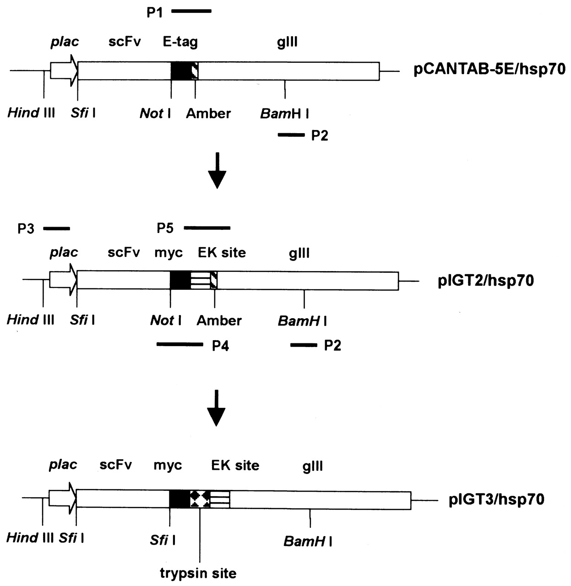
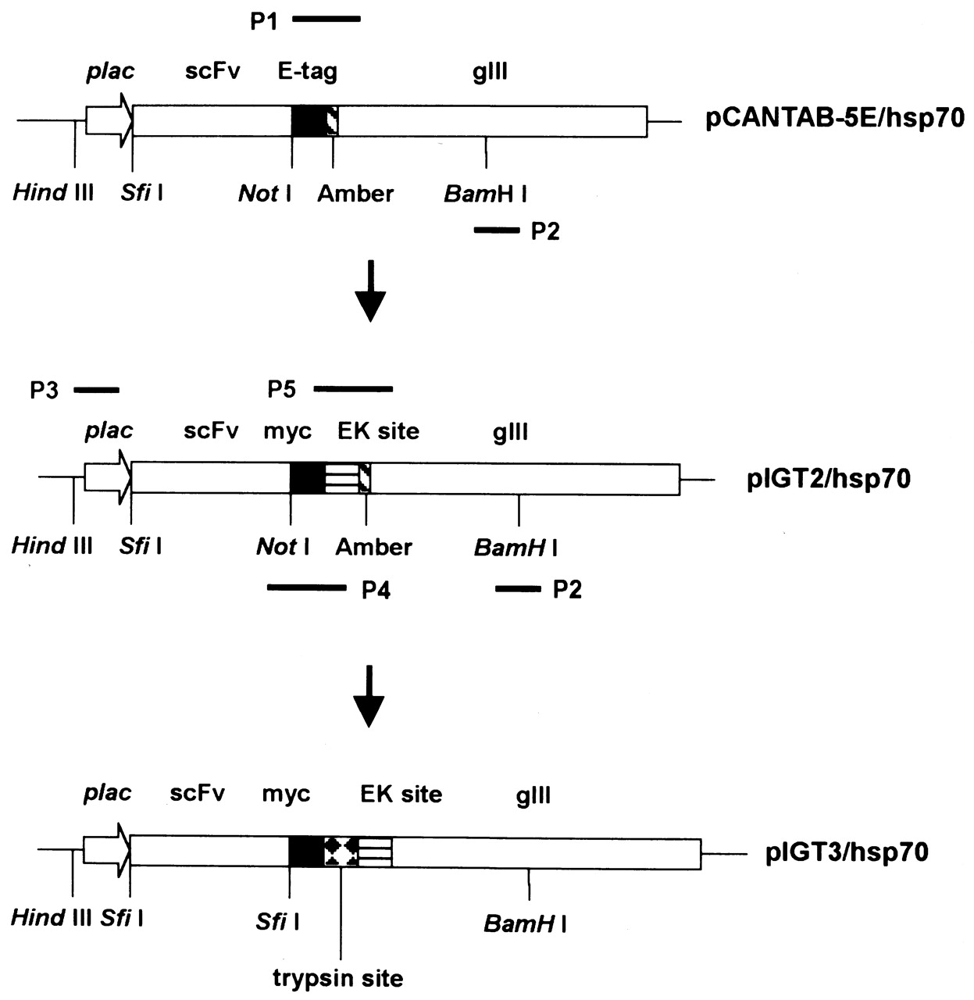

>g3NCBI-424aa
MKKLLFAIPLVVPFYSHSAETVESCLAKPHTENSFTNVWKDDKTLDRYANYEGCLWNATGVVVCTGDETQCYGTWVPIGLAIPENEGGGSEGGGSEGGGSEGGGTKPPEYGDTPIPGYTYINPLDGTYPPGTEQNPANPNPSLEESQPLNTFMFQNNRFRNRQGALTVYTGTVTQGTDPVKTYYQYTPVSSKAMYDAYWNGKFRDCAFHSGFNEDPFVCEYQGQSSDLPQPPVNAGGGSGGGSGGGSEGGGSEGGGSEGGGSEGGGSGGGSGSGDFDYEKMANANKGAMTENADENALQSDAKGKLDSVATDYGAAIDGFIGDVSGLANGNGATGDFAGSNSQMAQVGDGDNSPLMNNFRQYLPSLPQSVECRPFVFGAGKPYEFSIDCDKINLFRGVFAFLLYVATFMYVFSTFANILRNKES
>g3pComb3-177aa
EGGGSEGGGSEGGGSEGGGSGGGSGSGDFDYEKMANANKGAMTENADENALQSDAKGKLDSVATDYGAAIDGFIGDVSGLANGNGATGDFAGSNSQMAQVGDGDNSPLMNNFRQYLPSLPQSVECRPFVFSAGKPYEFSIDCDKINLFRGVFAFLLYVATFMYVFSTFANILRNKES
>g3pCT5e-404aa
TVESCLAKPHTENSFTNVWKDDKTLDRYANYEGCLWNATGVVVCTGDETQCYGTWVPIGLAIPENEGGGSEGGGSEGGGSEGGGTKPPEYGDTPIPGYTYINPLDGTYPPGTEQNPANPNPSLEESQPLNTFMFQNNRFRNRQGALTVYTGTVTQGTDPVKTYYQYTPVSSKAMYDAYWNGKFRDCAFHSGFNEDPFVCEYQGQSSDLPQPPVNAGGGSGGGSGGGSEGGGSEGGGSEGGGSEGGGSGGGSGSGDFDYEKMANANKGAMTENADENALQSDAKGKLDSVATDYGAAIDGFIGDVSGLANGNGATGDFAGSNSQMAQVGDGDNSPLMNNFRQYLPSLPQSVECRPYVFGAGKPYEFSIDCDKINLFRGVFAFLLYVATFMYVFSTFANILRNKES
======================
>g3pCT5e-1218bp
TAGACTGTTGAAAGTTGTTTAGCAAAACCTCATACAGAAAATTCATTTACTAACGTCTGGAAAGACGACAAAACTTTAGATCGTTACGCTAACTATGAGGGCTGTCTGTGGAATGCTACAGGCGTTGTGGTTTGTACTGGTGACGAAACTCAGTGTTACGGTACATGGGTTCCTATTGGGCTTGCTATCCCTGAAAATGAGGGTGGTGGCTCTGAGGGTGGCGGTTCTGAGGGTGGCGGTTCTGAGGGTGGCGGTACTAAACCTCCTGAGTACGGTGATACACCTATTCCGGGCTATACTTATATCAACCCTCTCGACGGCACTTATCCGCCTGGTACTGAGCAAAACCCCGCTAATCCTAATCCTTCTCTTGAGGAGTCTCAGCCTCTTAATACTTTCATGTTTCAGAATAATAGGTTCCGAAATAGGCAGGGTGCATTAACTGTTTATACGGGCACTGTTACTCAAGGCACTGACCCCGTTAAAACTTATTACCAGTACACTCCTGTATCATCAAAAGCCATGTATGACGCTTACTGGAACGGTAAATTCAGAGACTGCGCTTTCCATTCTGGCTTTAATGAGGATCCATTCGTTTGTGAATATCAAGGCCAATCGTCTGACCTGCCTCAACCTCCTGTCAATGCTGGCGGCGGCTCTGGTGGTGGTTCTGGTGGCGGCTCTGAGGGTGGCGGCTCTGAGGGTGGCGGTTCTGAGGGTGGCGGCTCTGAGGGTGGCGGTTCCGGTGGCGGCTCCGGTTCCGGTGATTTTGATTATGAAAAAATGGCAAACGCTAATAAGGGGGCTATGACCGAAAATGCCGATGAAAACGCGCTACAGTCTGACGCTAAAGGCAAACTTGATTCTGTCGCTACTGATTACGGTGCTGCTATCGATGGTTTCATTGGTGACGTTTCCGGCCTTGCTAATGGTAATGGTGCTACTGGTGATTTTGCTGGCTCTAATTCCCAAATGGCTCAAGTCGGTGACGGTGATAATTCACCTTTAATGAATAATTTCCGTCAATATTTACCTTCTTTGCCTCAGTCGGTTGAATGTCGCCCTTATGTCTTTGGCGCTGGTAAACCATATGAATTTTCTATTGATTGTGACAAAATAAACTTATTCCGTGGTGTCTTTGCGTTTCTTTTATATGTTGCCACCTTTATGTATGTATTTTCGACGTTTGCTAACATACTGCGTAATAAGGAGTCTTAA
>g3pComb3-537bp
TAGGAGGGTGGTGGCTCTGAGGGTGGCGGTTCTGAGGGTGGCGGCTCTGAGGGAGGCGGTTCCGGTGGTGGCTCTGGTTCCGGTGATTTTGATTATGAAAAGATGGCAAACGCTAATAAGGGGGCTATGACCGAAAATGCCGATGAAAACGCGCTACAGTCTGACGCTAAAGGCAAACTTGATTCTGTCGCTACTGATTACGGTGCTGCTATCGATGGTTTCATTGGTGACGTTTCCGGCCTTGCTAATGGTAATGGTGCTACTGGTGATTTTGCTGGCTCTAATTCCCAAATGGCTCAAGTCGGTGACGGTGATAATTCACCTTTAATGAATAATTTCCGTCAATATTTACCTTCCCTCCCTCAATCGGTTGAATGTCGCCCTTTTGTCTTTAGCGCTGGTAAACCATATGAATTTTCTATTGATTGTGACAAAATAAACTTATTCCGTGGTGTCTTTGCGTTTCTTTTATATGTTGCCACCTTTATGTATGTATTTTCTACGTTTGCTAACATACTGCGTAATAAGGAGTCTTAA
MKKLLFAIPLVVPFYSHSAETVESCLAKPHTENSFTNVWKDDKTLDRYANYEGCLWNATGVVVCTGDETQCYGTWVPIGLAIPENEGGGSEGGGSEGGGSEGGGTKPPEYGDTPIPGYTYINPLDGTYPPGTEQNPANPNPSLEESQPLNTFMFQNNRFRNRQGALTVYTGTVTQGTDPVKTYYQYTPVSSKAMYDAYWNGKFRDCAFHSGFNEDPFVCEYQGQSSDLPQPPVNAGGGSGGGSGGGSEGGGSEGGGSEGGGSEGGGSGGGSGSGDFDYEKMANANKGAMTENADENALQSDAKGKLDSVATDYGAAIDGFIGDVSGLANGNGATGDFAGSNSQMAQVGDGDNSPLMNNFRQYLPSLPQSVECRPFVFGAGKPYEFSIDCDKINLFRGVFAFLLYVATFMYVFSTFANILRNKES
>g3pComb3-177aa
EGGGSEGGGSEGGGSEGGGSGGGSGSGDFDYEKMANANKGAMTENADENALQSDAKGKLDSVATDYGAAIDGFIGDVSGLANGNGATGDFAGSNSQMAQVGDGDNSPLMNNFRQYLPSLPQSVECRPFVFSAGKPYEFSIDCDKINLFRGVFAFLLYVATFMYVFSTFANILRNKES
>g3pCT5e-404aa
TVESCLAKPHTENSFTNVWKDDKTLDRYANYEGCLWNATGVVVCTGDETQCYGTWVPIGLAIPENEGGGSEGGGSEGGGSEGGGTKPPEYGDTPIPGYTYINPLDGTYPPGTEQNPANPNPSLEESQPLNTFMFQNNRFRNRQGALTVYTGTVTQGTDPVKTYYQYTPVSSKAMYDAYWNGKFRDCAFHSGFNEDPFVCEYQGQSSDLPQPPVNAGGGSGGGSGGGSEGGGSEGGGSEGGGSEGGGSGGGSGSGDFDYEKMANANKGAMTENADENALQSDAKGKLDSVATDYGAAIDGFIGDVSGLANGNGATGDFAGSNSQMAQVGDGDNSPLMNNFRQYLPSLPQSVECRPYVFGAGKPYEFSIDCDKINLFRGVFAFLLYVATFMYVFSTFANILRNKES
======================
>g3pCT5e-1218bp
TAGACTGTTGAAAGTTGTTTAGCAAAACCTCATACAGAAAATTCATTTACTAACGTCTGGAAAGACGACAAAACTTTAGATCGTTACGCTAACTATGAGGGCTGTCTGTGGAATGCTACAGGCGTTGTGGTTTGTACTGGTGACGAAACTCAGTGTTACGGTACATGGGTTCCTATTGGGCTTGCTATCCCTGAAAATGAGGGTGGTGGCTCTGAGGGTGGCGGTTCTGAGGGTGGCGGTTCTGAGGGTGGCGGTACTAAACCTCCTGAGTACGGTGATACACCTATTCCGGGCTATACTTATATCAACCCTCTCGACGGCACTTATCCGCCTGGTACTGAGCAAAACCCCGCTAATCCTAATCCTTCTCTTGAGGAGTCTCAGCCTCTTAATACTTTCATGTTTCAGAATAATAGGTTCCGAAATAGGCAGGGTGCATTAACTGTTTATACGGGCACTGTTACTCAAGGCACTGACCCCGTTAAAACTTATTACCAGTACACTCCTGTATCATCAAAAGCCATGTATGACGCTTACTGGAACGGTAAATTCAGAGACTGCGCTTTCCATTCTGGCTTTAATGAGGATCCATTCGTTTGTGAATATCAAGGCCAATCGTCTGACCTGCCTCAACCTCCTGTCAATGCTGGCGGCGGCTCTGGTGGTGGTTCTGGTGGCGGCTCTGAGGGTGGCGGCTCTGAGGGTGGCGGTTCTGAGGGTGGCGGCTCTGAGGGTGGCGGTTCCGGTGGCGGCTCCGGTTCCGGTGATTTTGATTATGAAAAAATGGCAAACGCTAATAAGGGGGCTATGACCGAAAATGCCGATGAAAACGCGCTACAGTCTGACGCTAAAGGCAAACTTGATTCTGTCGCTACTGATTACGGTGCTGCTATCGATGGTTTCATTGGTGACGTTTCCGGCCTTGCTAATGGTAATGGTGCTACTGGTGATTTTGCTGGCTCTAATTCCCAAATGGCTCAAGTCGGTGACGGTGATAATTCACCTTTAATGAATAATTTCCGTCAATATTTACCTTCTTTGCCTCAGTCGGTTGAATGTCGCCCTTATGTCTTTGGCGCTGGTAAACCATATGAATTTTCTATTGATTGTGACAAAATAAACTTATTCCGTGGTGTCTTTGCGTTTCTTTTATATGTTGCCACCTTTATGTATGTATTTTCGACGTTTGCTAACATACTGCGTAATAAGGAGTCTTAA
>g3pComb3-537bp
TAGGAGGGTGGTGGCTCTGAGGGTGGCGGTTCTGAGGGTGGCGGCTCTGAGGGAGGCGGTTCCGGTGGTGGCTCTGGTTCCGGTGATTTTGATTATGAAAAGATGGCAAACGCTAATAAGGGGGCTATGACCGAAAATGCCGATGAAAACGCGCTACAGTCTGACGCTAAAGGCAAACTTGATTCTGTCGCTACTGATTACGGTGCTGCTATCGATGGTTTCATTGGTGACGTTTCCGGCCTTGCTAATGGTAATGGTGCTACTGGTGATTTTGCTGGCTCTAATTCCCAAATGGCTCAAGTCGGTGACGGTGATAATTCACCTTTAATGAATAATTTCCGTCAATATTTACCTTCCCTCCCTCAATCGGTTGAATGTCGCCCTTTTGTCTTTAGCGCTGGTAAACCATATGAATTTTCTATTGATTGTGACAAAATAAACTTATTCCGTGGTGTCTTTGCGTTTCTTTTATATGTTGCCACCTTTATGTATGTATTTTCTACGTTTGCTAACATACTGCGTAATAAGGAGTCTTAA
>An improved helper phage system for efficient isolation of specific antibody molecules in phage display
http://nar.oxfordjournals.org/content/30/5/e18/F2.expansion.html

Figure 2. Construction of pIGT2 and pIGT3: PCR amplifications for the construction of pIGT2 and pIGT3. In pIGT2, E-tag of pCABTAB-5E was replaced with myc tag using P1 and P2 PCR primers. P1 primer contains myc tag, EK cleavage site and sequence complementary to the 5′ region of gIII. P2 primer is complementary to the middle of gIII region containing BamHI restriction enzyme site. pIGT3 was generated by overlapping PCR using pIGT2 as a template. P3 primer is complementary to the upstream region of plac containing HindIII. P4 primer is complementary to VL FR4, myc tag and part of EK cleavage site, and contains SfiI restriction site next to VL FR4 and trypsin cleavage site next to myc tag as overhangings. P5 primer is complementary to EK cleavage site and 5′ region of gIII, but there is no TAG amber codon in front of gIII. Linking PCR to connect two PCR products was performed using P3 and P2 primers. Primer sequences are shown in the Materials and Methods.
http://nar.oxfordjournals.org/content/30/5/e18/F2.expansion.html

Figure 2. Construction of pIGT2 and pIGT3: PCR amplifications for the construction of pIGT2 and pIGT3. In pIGT2, E-tag of pCABTAB-5E was replaced with myc tag using P1 and P2 PCR primers. P1 primer contains myc tag, EK cleavage site and sequence complementary to the 5′ region of gIII. P2 primer is complementary to the middle of gIII region containing BamHI restriction enzyme site. pIGT3 was generated by overlapping PCR using pIGT2 as a template. P3 primer is complementary to the upstream region of plac containing HindIII. P4 primer is complementary to VL FR4, myc tag and part of EK cleavage site, and contains SfiI restriction site next to VL FR4 and trypsin cleavage site next to myc tag as overhangings. P5 primer is complementary to EK cleavage site and 5′ region of gIII, but there is no TAG amber codon in front of gIII. Linking PCR to connect two PCR products was performed using P3 and P2 primers. Primer sequences are shown in the Materials and Methods.
>scFv-giii ATGGCCCAGGTGAAGCTGCAGCAGTCAGGACCTGGCCTGGTGGCGCCCTCACAGAGCCTGTCCATCACATGCACCGTCTCAGGGTTTTCATTAACCAGCTATGGTGTACACTGGGTTCGCCAGCCTCCAGGAAAGGGTCTGGAGTGGCTGGGAGTAATATGGGCTGGTGGAAGCACAAACTATAATTCAGCTCTCAAATCCAGACTGAACATCAGCAAGGACAACTCCAAGAGCCAAGTTTTCTTAAAAATGAACAGTCTCCAAACTGATGACACAGCCATGTACTACTGTGCCAGAAACTGGGGCAGCTACTGGTACTTCGATGTCTGGGGCCAAGGCCACGGTCACCGTCTCCTCAGTGGAGGCGGTTCAGGCGGAGGTGGCGGAGGTGGCTCTGGCGGTGGCGGATCGGACATTGAGCTCACCCAGTCTCCAGCAATCATGTCTGCATCTCCAGGGGAAAAGGTCACCATGACCTGCAGGGCCAGCTCAAGTATAAGTTCCAGTTACTTGCACTGGTACCAGCAGAAGTCAGGCGCTTCCCCCAAACCCTTGATTCATAGGACATCCAACCTGGCTTCTGGAGTCCCAGCTCGCTTCAGTGGCAGTGGGTCTGGGACCTCTTACTCTCTCACAATCAGCAGCGTGGAGGCTGAAGATGATGCAACTTATTACTGCCAGCAGTGGAGTGGTTACCCATTCACGTTCGGTGCTGGGACCAAGCTCGAGATCAAACGGGCGGCCGCA ggtgcgccggtgccgtatccggatccgctggaaccgcgtGCCGCATAG ACTGTTGAAAGTTGTTTAGCAAAACCTCATACAGAAAATTCATTTACTAACGTCTGGAAAGACGACAAAACTTTAGATCGTTACGCTAACTATGAGGGCTGTCTGTGGAATGCTACAGGCGTTGTGGTTTGTACTGGTGACGAAACTCAGTGTTACGGTACATGGGTTCCTATTGGGCTTGCTATCCCTGAAAATGAGGGTGGTGGCTCTGAGGGTGGCGGTTCTGAGGGTGGCGGTTCTGAGGGTGGCGGTACTAAACCTCCTGAGTACGGTGATACACCTATTCCGGGCTATACTTATATCAACCCTCTCGACGGCACTTATCCGCCTGGTACTGAGCAAAACCCCGCTAATCCTAATCCTTCTCTTGAGGAGTCTCAGCCTCTTAATACTTTCATGTTTCAGAATAATAGGTTCCGAAATAGGCAGGGTGCATTAACTGTTTATACGGGCACTGTTACTCAAGGCACTGACCCCGTTAAAACTTATTACCAGTACACTCCTGTATCATCAAAAGCCATGTATGACGCTTACTGGAACGGTAAATTCAGAGACTGCGCTTTCCATTCTGGCTTTAATGAGGATCCATTCGTTTGTGAATATCAAGGCCAATCGTCTGACCTGCCTCAACCTCCTGTCAATGCTGGCGGCGGCTCTGGTGGTGGTTCTGGTGGCGGCTCTGAGGGTGGCGGCTCTGAGGGTGGCGGTTCTGAGGGTGGCGGCTCTGAGGGTGGCGGTTCCGGTGGCGGCTCCGGTTCCGGTGATTTTGATTATGAAAAAATGGCAAACGCTAATAAGGGGGCTATGACCGAAAATGCCGATGAAAACGCGCTACAGTCTGACGCTAAAGGCAAACTTGATTCTGTCGCTACTGATTACGGTGCTGCTATCGATGGTTTCATTGGTGACGTTTCCGGCCTTGCTAATGGTAATGGTGCTACTGGTGATTTTGCTGGCTCTAATTCCCAAATGGCTCAAGTCGGTGACGGTGATAATTCACCTTTAATGAATAATTTCCGTCAATATTTACCTTCTTTGCCTCAGTCGGTTGAATGTCGCCCTTATGTCTTTGGCGCTGGTAAACCATATGAATTTTCTATTGATTGTGACAAAATAAACTTATTCCGTGGTGTCTTTGCGTTTCTTTTATATGTTGCCACCTTTATGTATGTATTTTCGACGTTTGCTAACATACTGCGTAATAAGGAGTCTTAA
原始序列：ATGGCCCAGGTGAAGCTGCAGCAGTCAGGACCTGGCCTGGTGGCGCCCTCACAGAGCCTGTCCATCACATGCACCGTCTCAGGGTTTTCATTAACCAGCTATGGTGTACACTGGGTTCGCCAGCCTCCAGGAAAGGGTCTGGAGTGGCTGGGAGTAATATGGGCTGGTGGAAGCACAAACTATAATTCAGCTCTCAAATCCAGACTGAACATCAGCAAGGACAACTCCAAGAGCCAAGTTTTCTTAAAAATGAACAGTCTCCAAACTGATGACACAGCCATGTACTACTGTGCCAGAAACTGGGGCAGCTACTGGTACTTCGATGTCTGGGGCCAAGGCCACGGTCACCGTCTCCTCAGTGGAGGCGGTTCAGGCGGAGGTGGCGGAGGTGGCTCTGGCGGTGGCGGATCGGACATTGAGCTCACCCAGTCTCCAGCAATCATGTCTGCATCTCCAGGGGAAAAGGTCACCATGACCTGCAGGGCCAGCTCAAGTATAAGTTCCAGTTACTTGCACTGGTACCAGCAGAAGTCAGGCGCTTCCCCCAAACCCTTGATTCATAGGACATCCAACCTGGCTTCTGGAGTCCCAGCTCGCTTCAGTGGCAGTGGGTCTGGGACCTCTTACTCTCTCACAATCAGCAGCGTGGAGGCTGAAGATGATGCAACTTATTACTGCCAGCAGTGGAGTGGTTACCCATTCACGTTCGGTGCTGGGACCAAGCTCGAGATCAAACGGGCGGCCGCAGGTGCGCCGGTGCCGTATCCGGATCCGCTGGAACCGCGTGCCGCATAGACTGTTGAAAGTTGTTTAGCAAAACCTCATACAGAAAATTCATTTACTAACGTCTGGAAAGACGACAAAACTTTAGATCGTTACGCTAACTATGAGGGCTGTCTGTGGAATGCTACAGGCGTTGTGGTTTGTACTGGTGACGAAACTCAGTGTTACGGTACATGGGTTCCTATTGGGCTTGCTATCCCTGAAAATGAGGGTGGTGGCTCTGAGGGTGGCGGTTCTGAGGGTGGCGGTTCTGAGGGTGGCGGTACTAAACCTCCTGAGTACGGTGATACACCTATTCCGGGCTATACTTATATCAACCCTCTCGACGGCACTTATCCGCCTGGTACTGAGCAAAACCCCGCTAATCCTAATCCTTCTCTTGAGGAGTCTCAGCCTCTTAATACTTTCATGTTTCAGAATAATAGGTTCCGAAATAGGCAGGGTGCATTAACTGTTTATACGGGCACTGTTACTCAAGGCACTGACCCCGTTAAAACTTATTACCAGTACACTCCTGTATCATCAAAAGCCATGTATGACGCTTACTGGAACGGTAAATTCAGAGACTGCGCTTTCCATTCTGGCTTTAATGAGGATCCATTCGTTTGTGAATATCAAGGCCAATCGTCTGACCTGCCTCAACCTCCTGTCAATGCTGGCGGCGGCTCTGGTGGTGGTTCTGGTGGCGGCTCTGAGGGTGGCGGCTCTGAGGGTGGCGGTTCTGAGGGTGGCGGCTCTGAGGGTGGCGGTTCCGGTGGCGGCTCCGGTTCCGGTGATTTTGATTATGAAAAAATGGCAAACGCTAATAAGGGGGCTATGACCGAAAATGCCGATGAAAACGCGCTACAGTCTGACGCTAAAGGCAAACTTGATTCTGTCGCTACTGATTACGGTGCTGCTATCGATGGTTTCATTGGTGACGTTTCCGGCCTTGCTAATGGTAATGGTGCTACTGGTGATTTTGCTGGCTCTAATTCCCAAATGGCTCAAGTCGGTGACGGTGATAATTCACCTTTAATGAATAATTTCCGTCAATATTTACCTTCTTTGCCTCAGTCGGTTGAATGTCGCCCTTATGTCTTTGGCGCTGGTAAACCATATGAATTTTCTATTGATTGTGACAAAATAAACTTATTCCGTGGTGTCTTTGCGTTTCTTTTATATGTTGCCACCTTTATGTATGTATTTTCGACGTTTGCTAACATACTGCGTAATAAGGAGTCTTAA[2010bp]
翻译产物：M A Q V K L Q Q S G P G L V A P S Q S L S I T C T V S G F S L T S Y G V H W V R Q P P G K G L E W L G V I W A G G S T N Y N S A L K S R L N I S K D N S K S Q V F L K M N S L Q T D D T A M Y Y C A R N W G S Y W Y F D V W G Q G H G H R L L S G G G S G G G G G G G S G G G G S D I E L T Q S P A I M S A S P G E K V T M T C R A S S S I S S S Y L H W Y Q Q K S G A S P K P L I H R T S N L A S G V P A R F S G S G S G T S Y S L T I S S V E A E D D A T Y Y C Q Q W S G Y P F T F G A G T K L E I K R A A A G A P V P Y P D P L E P R A A - T V E S C L A K P H T E N S F T N V W K D D K T L D R Y A N Y E G C L W N A T G V V V C T G D E T Q C Y G T W V P I G L A I P E N E G G G S E G G G S E G G G S E G G G T K P P E Y G D T P I P G Y T Y I N P L D G T Y P P G T E Q N P A N P N P S L E E S Q P L N T F M F Q N N R F R N R Q G A L T V Y T G T V T Q G T D P V K T Y Y Q Y T P V S S K A M Y D A Y W N G K F R D C A F H S G F N E D P F V C E Y Q G Q S S D L P Q P P V N A G G G S G G G S G G G S E G G G S E G G G S E G G G S E G G G S G G G S G S G D F D Y E K M A N A N K G A M T E N A D E N A L Q S D A K G K L D S V A T D Y G A A I D G F I G D V S G L A N G N G A T G D F A G S N S Q M A Q V G D G D N S P L M N N F R Q Y L P S L P Q S V E C R P Y V F G A G K P Y E F S I D C D K I N L F R G V F A F L L Y V A T F M Y V F S T F A N I L R N K E S -
翻译产物：MAQVKLQQSGPGLVAPSQSLSITCTVSGFSLTSYGVHWVRQPPGKGLEWLGVIWAGGSTNYNSALKSRLNISKDNSKSQVFLKMNSLQTDDTAMYYCARNWGSYWYFDVWGQGHGHRLLSGGGSGGGGGGGSGGGGSDIELTQSPAIMSASPGEKVTMTCRASSSISSSYLHWYQQKSGASPKPLIHRTSNLASGVPARFSGSGSGTSYSLTISSVEAEDDATYYCQQWSGYPFTFGAGTKLEIKRAAAGAPVPYPDPLEPRAA-TVESCLAKPHTENSFTNVWKDDKTLDRYANYEGCLWNATGVVVCTGDETQCYGTWVPIGLAIPENEGGGSEGGGSEGGGSEGGGTKPPEYGDTPIPGYTYINPLDGTYPPGTEQNPANPNPSLEESQPLNTFMFQNNRFRNRQGALTVYTGTVTQGTDPVKTYYQYTPVSSKAMYDAYWNGKFRDCAFHSGFNEDPFVCEYQGQSSDLPQPPVNAGGGSGGGSGGGSEGGGSEGGGSEGGGSEGGGSGGGSGSGDFDYEKMANANKGAMTENADENALQSDAKGKLDSVATDYGAAIDGFIGDVSGLANGNGATGDFAGSNSQMAQVGDGDNSPLMNNFRQYLPSLPQSVECRPYVFGAGKPYEFSIDCDKINLFRGVFAFLLYVATFMYVFSTFANILRNKES-[670aa]
>scFv-giii-插入重复序列后 gsegg ATGGCCCAGGTGAAGCTGCAGCAGTCAGGACCTGGCCTGGTGGCGCCCTCACAGAGCCTGTCCATCACATGCACCGTCTCAGGGTTTTCATTAACCAGCTATGGTGTACACTGGGTTCGCCAGCCTCCAGGAAAGGGTCTGGAGTGGCTGGGAGTAATATGGGCTGGTGGAAGCACAAACTATAATTCAGCTCTCAAATCCAGACTGAACATCAGCAAGGACAACTCCAAGAGCCAAGTTTTCTTAAAAATGAACAGTCTCCAAACTGATGACACAGCCATGTACTACTGTGCCAGAAACTGGGGCAGCTACTGGTACTTCGATGTCTGGGGCCAAGGCCACGGTCACCGTCTCCTCAGTGGAGGCGGTTCAGGCGGAGGTGGCGGAGGTGGCTCTGGCGGTGGCGGATCGGACATTGAGCTCACCCAGTCTCCAGCAATCATGTCTGCATCTCCAGGGGAAAAGGTCACCATGACCTGCAGGGCCAGCTCAAGTATAAGTTCCAGTTACTTGCACTGGTACCAGCAGAAGTCAGGCGCTTCCCCCAAACCCTTGATTCATAGGACATCCAACCTGGCTTCTGGAGTCCCAGCTCGCTTCAGTGGCAGTGGGTCTGGGACCTCTTACTCTCTCACAATCAGCAGCGTGGAGGCTGAAGATGATGCAACTTATTACTGCCAGCAGTGGAGTGGTTACCCATTCACGTTCGGTGCTGGGACCAAGCTCGAGATCAAACGGGCGGCCGCA ggtgcgccggtgccgtatccggatccgctggaaccgcgtGCCGCATAG ACTGTTGAAAGTTGTTTAGCAAAACCTCATACAGAAAATTCATTTACTAACGTCTGGAAAGACGACAAAACTTTAGATCGTTACGCTAACTATGAGGGCTGTCTGTGGAATGCTACAGGCGTTGTGGTTTGTACTGGTGACGAAACTCAGTGTTACGGTACATGGGTTCCTATTGGGCTTGCTATCCCTGAAAATGAGGGTGGTGGCTCTGAGGGTGGCGGTTCTGAGGGTGGCGGTTCTGAGGGTGGCGGTACTAAACCTCCTGAGTACGGTGATACACCTATTCCGGGCTATACTTATATCAACCCTCTCGACGGCACTTATCCGCCTGGTACTGAGCAAAACCCCGCTAATCCTAATCCTTCTCTTGAGGAGTCTCAGCCTCTTAATACTTTCATGTTTCAGAATAATAGGTTCCGAAATAGGCAGGGTGCATTAACTGTTTATACGGGCACTGTTACTCAAGGCACTGACCCCGTTAAAACTTATTACCAGTACACTCCTGTATCATCAAAAGCCATGTATGACGCTTACTGGAACGGTAAATTCAGAGACTGCGCTTTCCATTCTGGCTTTAATGAGGATCCATTCGTTTGTGAATATCAAGGCCAATCGTCTGACCTGCCTCAACCTCCTGTCAATGCTGGCGGCGGCTCTGGTGGTGGTTCTGGTGGCGGCTCTGAGGGTGGCGGCTCTGAGGGTGGCGG [CTCTGAGGGTGGCGG] TTCTGAGGGTGGCGGCTCTGAGGGTGGCGGTTCCGGTGGCGGCTCCGGTTCCGGTGATTTTGATTATGAAAAAATGGCAAACGCTAATAAGGGGGCTATGACCGAAAATGCCGATGAAAACGCGCTACAGTCTGACGCTAAAGGCAAACTTGATTCTGTCGCTACTGATTACGGTGCTGCTATCGATGGTTTCATTGGTGACGTTTCCGGCCTTGCTAATGGTAATGGTGCTACTGGTGATTTTGCTGGCTCTAATTCCCAAATGGCTCAAGTCGGTGACGGTGATAATTCACCTTTAATGAATAATTTCCGTCAATATTTACCTTCTTTGCCTCAGTCGGTTGAATGTCGCCCTTATGTCTTTGGCGCTGGTAAACCATATGAATTTTCTATTGATTGTGACAAAATAAACTTATTCCGTGGTGTCTTTGCGTTTCTTTTATATGTTGCCACCTTTATGTATGTATTTTCGACGTTTGCTAACATACTGCGTAATAAGGAGTCTTAA原始序列：ATGGCCCAGGTGAAGCTGCAGCAGTCAGGACCTGGCCTGGTGGCGCCCTCACAGAGCCTGTCCATCACATGCACCGTCTCAGGGTTTTCATTAACCAGCTATGGTGTACACTGGGTTCGCCAGCCTCCAGGAAAGGGTCTGGAGTGGCTGGGAGTAATATGGGCTGGTGGAAGCACAAACTATAATTCAGCTCTCAAATCCAGACTGAACATCAGCAAGGACAACTCCAAGAGCCAAGTTTTCTTAAAAATGAACAGTCTCCAAACTGATGACACAGCCATGTACTACTGTGCCAGAAACTGGGGCAGCTACTGGTACTTCGATGTCTGGGGCCAAGGCCACGGTCACCGTCTCCTCAGTGGAGGCGGTTCAGGCGGAGGTGGCGGAGGTGGCTCTGGCGGTGGCGGATCGGACATTGAGCTCACCCAGTCTCCAGCAATCATGTCTGCATCTCCAGGGGAAAAGGTCACCATGACCTGCAGGGCCAGCTCAAGTATAAGTTCCAGTTACTTGCACTGGTACCAGCAGAAGTCAGGCGCTTCCCCCAAACCCTTGATTCATAGGACATCCAACCTGGCTTCTGGAGTCCCAGCTCGCTTCAGTGGCAGTGGGTCTGGGACCTCTTACTCTCTCACAATCAGCAGCGTGGAGGCTGAAGATGATGCAACTTATTACTGCCAGCAGTGGAGTGGTTACCCATTCACGTTCGGTGCTGGGACCAAGCTCGAGATCAAACGGGCGGCCGCAGGTGCGCCGGTGCCGTATCCGGATCCGCTGGAACCGCGTGCCGCATAGACTGTTGAAAGTTGTTTAGCAAAACCTCATACAGAAAATTCATTTACTAACGTCTGGAAAGACGACAAAACTTTAGATCGTTACGCTAACTATGAGGGCTGTCTGTGGAATGCTACAGGCGTTGTGGTTTGTACTGGTGACGAAACTCAGTGTTACGGTACATGGGTTCCTATTGGGCTTGCTATCCCTGAAAATGAGGGTGGTGGCTCTGAGGGTGGCGGTTCTGAGGGTGGCGGTTCTGAGGGTGGCGGTACTAAACCTCCTGAGTACGGTGATACACCTATTCCGGGCTATACTTATATCAACCCTCTCGACGGCACTTATCCGCCTGGTACTGAGCAAAACCCCGCTAATCCTAATCCTTCTCTTGAGGAGTCTCAGCCTCTTAATACTTTCATGTTTCAGAATAATAGGTTCCGAAATAGGCAGGGTGCATTAACTGTTTATACGGGCACTGTTACTCAAGGCACTGACCCCGTTAAAACTTATTACCAGTACACTCCTGTATCATCAAAAGCCATGTATGACGCTTACTGGAACGGTAAATTCAGAGACTGCGCTTTCCATTCTGGCTTTAATGAGGATCCATTCGTTTGTGAATATCAAGGCCAATCGTCTGACCTGCCTCAACCTCCTGTCAATGCTGGCGGCGGCTCTGGTGGTGGTTCTGGTGGCGGCTCTGAGGGTGGCGGCTCTGAGGGTGGCGGCTCTGAGGGTGGCGGTTCTGAGGGTGGCGGCTCTGAGGGTGGCGGTTCCGGTGGCGGCTCCGGTTCCGGTGATTTTGATTATGAAAAAATGGCAAACGCTAATAAGGGGGCTATGACCGAAAATGCCGATGAAAACGCGCTACAGTCTGACGCTAAAGGCAAACTTGATTCTGTCGCTACTGATTACGGTGCTGCTATCGATGGTTTCATTGGTGACGTTTCCGGCCTTGCTAATGGTAATGGTGCTACTGGTGATTTTGCTGGCTCTAATTCCCAAATGGCTCAAGTCGGTGACGGTGATAATTCACCTTTAATGAATAATTTCCGTCAATATTTACCTTCTTTGCCTCAGTCGGTTGAATGTCGCCCTTATGTCTTTGGCGCTGGTAAACCATATGAATTTTCTATTGATTGTGACAAAATAAACTTATTCCGTGGTGTCTTTGCGTTTCTTTTATATGTTGCCACCTTTATGTATGTATTTTCGACGTTTGCTAACATACTGCGTAATAAGGAGTCTTAA [2025bp] 翻译产物：M A Q V K L Q Q S G P G L V A P S Q S L S I T C T V S G F S L T S Y G V H W V R Q P P G K G L E W L G V I W A G G S T N Y N S A L K S R L N I S K D N S K S Q V F L K M N S L Q T D D T A M Y Y C A R N W G S Y W Y F D V W G Q G H G H R L L S G G G S G G G G G G G S G G G G S D I E L T Q S P A I M S A S P G E K V T M T C R A S S S I S S S Y L H W Y Q Q K S G A S P K P L I H R T S N L A S G V P A R F S G S G S G T S Y S L T I S S V E A E D D A T Y Y C Q Q W S G Y P F T F G A G T K L E I K R A A A G A P V P Y P D P L E P R A A - T V E S C L A K P H T E N S F T N V W K D D K T L D R Y A N Y E G C L W N A T G V V V C T G D E T Q C Y G T W V P I G L A I P E N E G G G S E G G G S E G G G S E G G G T K P P E Y G D T P I P G Y T Y I N P L D G T Y P P G T E Q N P A N P N P S L E E S Q P L N T F M F Q N N R F R N R Q G A L T V Y T G T V T Q G T D P V K T Y Y Q Y T P V S S K A M Y D A Y W N G K F R D C A F H S G F N E D P F V C E Y Q G Q S S D L P Q P P V N A G G G S G G G S G G G S E G G G S E G G G S E G G G S E G G G S E G G G S G G G S G S G D F D Y E K M A N A N K G A M T E N A D E N A L Q S D A K G K L D S V A T D Y G A A I D G F I G D V S G L A N G N G A T G D F A G S N S Q M A Q V G D G D N S P L M N N F R Q Y L P S L P Q S V E C R P Y V F G A G K P Y E F S I D C D K I N L F R G V F A F L L Y V A T F M Y V F S T F A N I L R N K E S - 翻译产物：MAQVKLQQSGPGLVAPSQSLSITCTVSGFSLTSYGVHWVRQPPGKGLEWLGVIWAGGSTNYNSALKSRLNISKDNSKSQVFLKMNSLQTDDTAMYYCARNWGSYWYFDVWGQGHGHRLLSGGGSGGGGGGGSGGGGSDIELTQSPAIMSASPGEKVTMTCRASSSISSSYLHWYQQKSGASPKPLIHRTSNLASGVPARFSGSGSGTSYSLTISSVEAEDDATYYCQQWSGYPFTFGAGTKLEIKRAAAGAPVPYPDPLEPRAA-TVESCLAKPHTENSFTNVWKDDKTLDRYANYEGCLWNATGVVVCTGDETQCYGTWVPIGLAIPENEGGGSEGGGSEGGGSEGGGTKPPEYGDTPIPGYTYINPLDGTYPPGTEQNPANPNPSLEESQPLNTFMFQNNRFRNRQGALTVYTGTVTQGTDPVKTYYQYTPVSSKAMYDAYWNGKFRDCAFHSGFNEDPFVCEYQGQSSDLPQPPVNAGGGSGGGSGGGSEGGGSEGGGSEGGGSEGGGSEGGGSGGGSGSGDFDYEKMANANKGAMTENADENALQSDAKGKLDSVATDYGAAIDGFIGDVSGLANGNGATGDFAGSNSQMAQVGDGDNSPLMNNFRQYLPSLPQSVECRPYVFGAGKPYEFSIDCDKINLFRGVFAFLLYVATFMYVFSTFANILRNKES- [675aa]
>gIII from NCBI: protein III [Enterobacteria phage f1] 424 aa http://www.ncbi.nlm.nih.gov/protein/730977582?report=genbank&log$=protalign&blast_rank=4&RID=JW2EMW2701RMKKLLFAIPLVVPFYSHSAETVESCLAKPHTENSFTNVWKDDKTLDRYANYEGCLWNATGVVVCTGDETQCYGTWVPIGLAIPENEGGGSEGGGSEGGGSEGGGTKPPEYGDTPIPGYTYINPLDGTYPPGTEQNPANPNPSLEESQPLNTFMFQNNRFRNRQGALTVYTGTVTQGTDPVKTYYQYTPVSSKAMYDAYWNGKFRDCAFHSGFNEDPFVCEYQGQSSDLPQPPVNAGGGSGGGSGGGSEGGGSEGGGSEGGGSEGGGSGGGSGSGDFDYEKMANANKGAMTENADENALQSDAKGKLDSVATDYGAAIDGFIGDVSGLANGNGATGDFAGSNSQMAQVGDGDNSPLMNNFRQYLPSLPQSVECRPFVFGAGKPYEFSIDCDKINLFRGVFAFLLYVATFMYVFSTFANILRNKESRegion 1..424 /region_name="III" /note="attachment protein; PHA00370" /db_xref="CDD:164795" Region 1..18 [MKKLLFAIPLVVPFYSHS]18aa /gene="III" /region_name="Signal" /experiment="experimental evidence, no additional details recorded" /note="{ECO:0000250}." Region 19..424 /gene="III" /region_name="Mature chain" /experiment="experimental evidence, no additional details recorded" /note="Attachment protein G3P. /FTId=PRO_0000003294." Region 19..85 /gene="III" /region_name="Region of interest in the sequence" /experiment="experimental evidence, no additional details recorded" /note="N1." Bond bond(25,54) /gene="III" /bond_type="disulfide" /experiment="experimental evidence, no additional details recorded" /note="{ECO:0000250}." Bond bond(64,71) /gene="III" /bond_type="disulfide" /experiment="experimental evidence, no additional details recorded" /note="{ECO:0000250}." Region 2..65[KKLLFAIPLVVPFYSHSAETVESCLAKPHTENSFTNVWKDDKTLDRYANYEGCLWNATGVVVCT]64aa /region_name="Phage_Coat_A" /note="Phage Coat Protein A; pfam05357" /db_xref="CDD:147509" Region 105..176[TKPPEYGDTPIPGYTYINPLDGTYPPGTEQNPANPNPSLEESQPLNTFMFQNNRFRNRQGALTVYTGTVTQG]72aa /region_name="Phage_Coat_A" /note="Phage Coat Protein A; pfam05357" /db_xref="CDD:147509" Region 86..104 /gene="III" /region_name="Region of interest in the sequence" /experiment="experimental evidence, no additional details recorded" /note="G1 (Gly-rich linker)." Region 105..235 /gene="III" /region_name="Region of interest in the sequence" /experiment="experimental evidence, no additional details recorded" /note="N2." Bond bond(206,219) /gene="III" /bond_type="disulfide" /experiment="experimental evidence, no additional details recorded" /note="{ECO:0000250}." Region 236..274 /gene="III" /region_name="Compositionally biased region" /experiment="experimental evidence, no additional details recorded" /note="Gly-rich." Region 236..274 /gene="III" /region_name="Region of interest in the sequence" /experiment="experimental evidence, no additional details recorded" /note="G2 (Gly-rich linker)." Region 253..262 /gene="III" /region_name="Region of interest in the sequence" /experiment="experimental evidence, no additional details recorded" /note="Not essential for gene 3 function." Region 275..424 /gene="III" /region_name="Region of interest in the sequence" /experiment="experimental evidence, no additional details recorded" /note="CT." Region 280 /gene="III" /region_name="Conflict" /experiment="experimental evidence, no additional details recorded" /note="K -> N (in Ref. 1; CAA23872). {ECO:0000305}." Region 378 /gene="III" /region_name="Conflict" /experiment="experimental evidence, no additional details recorded" /note="G -> R (in Ref. 1; CAA23872). {ECO:0000305}." Region 398..418 /gene="III" /region_name="Transmembrane region" /experiment="experimental evidence, no additional details recorded" /note="Helical. {ECO:0000255}."